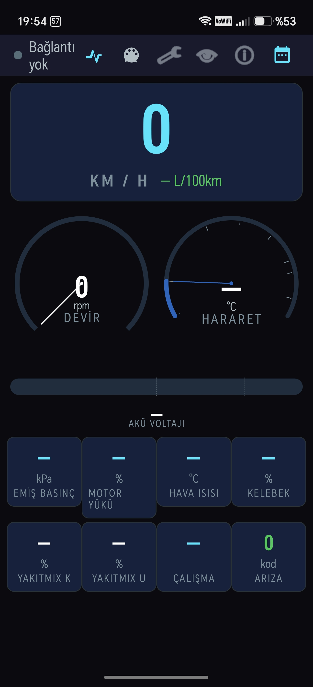

01
Gerçek Zamanlı HUD
Hız, devir, hararet ve daha fazlasını yansıma modunda, tek bakışta okuyun.
Telefonunuzu gece sürüşüne hazır bir HUD ekranına dönüştürün. ELM327 üzerinden hız, devir, sıcaklık ve motor verilerini tek bakışta izleyin.

Gereksiz kalabalık yok. Gözünüz yolda kalırken gereken veri tam önünüzde.
Hız, devir, hararet ve daha fazlasını yansıma modunda, tek bakışta okuyun.
Bluetooth ELM327 adaptörünüzle hızlıca bağlanın, aracınızın canlı verisini alın.
Gece sürüşü için tasarlanan yüksek kontrastlı, göz yormayan arayüz.
Obd Hud Car Doctor’ı şimdi indirin ve telefonunuzu akıllı bir sürüş ekranına dönüştürün.
Google Play'den İndir ↗Android · ELM327 · ücretsiz başlangıç